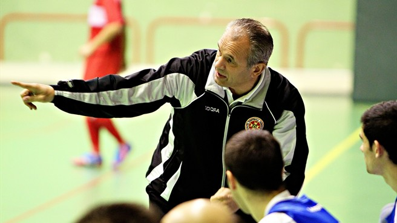

<!--
  Generated template for the VistaPublicacion page.

  See http://ionicframework.com/docs/components/#navigation for more info on
  Ionic pages and navigation.
-->
<ion-header>

  <ion-navbar >
    <ion-title  *ngIf="datosPublicacion">{{datosPublicacion.titulo}}</ion-title>
    <ion-icon id="icon-share" name="share" end></ion-icon>
  </ion-navbar>

</ion-header>


<ion-content padding>
  <div *ngIf="datosPublicacion" id="seccion-media">
    <ion-slides>
      <ion-slide>
        
      </ion-slide>
    </ion-slides>
  </div>
  <div *ngIf="datosPublicacion" id="seccion-info">
    <h2 >{{datosPublicacion.titulo}}</h2>
    <h4>Publicado por {{datosPublicacion.entrenador}}</h4>
  </div>
  <div *ngIf="datosPublicacion" id="seccion-descripcion">
    <p>{{datosPublicacion.descripcion}}</p>
  </div>
  <ion-buttons>
    <button *ngIf="datosPublicacion" ion-button icon-only>
      Ver más de {{datosPublicacion.entrenador}}
    </button>
    <button ion-button icon-only>
      Recomendar
    </button>
  </ion-buttons>
</ion-content>
